스크롤을 내려주세요
기후변화로 발생하는 자연재해. 어린이들은 내일 더 심각한 미세먼지를 견뎌야 합니다.
"숨 쉴 때마다 답답해요."
© UNICEF Video
미세먼지로
매일 22,000명 사망
개발도상국 사망 원인 1위는 오염된 공기로 발병하는 호흡기 질환입니다.
특히, 미세먼지로 매일 5세 미만 어린이 2,000여 명이 목숨을 잃습니다.
출처: WHO(World Health Organization) 2014
- 집 안
-
미세먼지와 오염된
연료가 가득한
실내에서 생활해
매일 1.2만 명 사망
- 집 밖
-
야외 활동하는 사람이
실내에 있는 사람보다
사망 확률 급격히 상승
"가만히 있어도 가슴이 아프고 기침해요."
© UNICEF Video

미세먼지에 취약한
5세 미만 어린이들의 폐
5세 미만 어린이들의 폐는 미성숙해 집 안팎 오염된 공기와
미세먼지에 매우 취약합니다.
어린이들은 호흡속도가 빨라 대기오염에 노출될 경우 폐렴에
걸릴 가능성이 매우 높아집니다.
- 대기오염으로 사망하는
- 5세 미만 어린이 수
- 매년 67만 명
"불을 붙이고 나면 목이 따가워요."
© UNICEF/UNI78664/Kamber

집안일로 매연까지
흡입하게 되는
여자 어린이들
집안일을 주로 여자 어린이들이 하는 개발도상국의 주거 환경은 특히 심각합니다.
오염된 연료로 매연을 내뿜는 취사도구는 미세먼지 농도를 높이고
이 취사도구를 사용하는 여자 어린이들은 심각한 폐 손상을 입습니다.
-
개발도상국
실내 대기오염도는
기준치의 100배 초과
어린이 혼자서는
이 미세먼지를 이겨낼 수 없습니다.
유니세프는 아이들 편입니다.


-
- 호흡기 질환을 예방하는 마스크를 지원하고 폐렴을 치료합니다
- 어린이들의 폐는 작고 연약합니다. 유니세프는 미세먼지가 심각한 시리아, 몽골, 니제르 등에 마스크를 보급하고 급성 폐렴을 치료할 수 있는 의약품을 지원하고 있습니다.
-
- 미세먼지 차단 기술을 개발합니다
- 유니세프는 독립된 이노베이션 랩을 통해 미세먼지를 낮출 수 있는 기술을 개발합니다. 집안일을 하는 여자 어린이를 위해 실내에서 사용하더라도 매연을 줄이고 성능을 향상시킬 수 있는 스토브를 개발해 공급하고 있습니다.
-
- 규모 있는 대응을 진행합니다
- 기후변화는 장기적으로 해결해야 할 문제입니다. 유니세프는 국제 구호단체들의 조정 기관인 IASC의 영양, 식수/위생, 어린이 보호 분야의 리더로서 도움이 필요한 어린이가 있는 현장의 지휘관 역할을 합니다.
-
- 전문적으로 접근합니다
- 기후변화로 발생하는 자연재해는 근본적인 원인을 파악하고 해결할 수 있는 역량이 필요합니다. 유니세프는 독립된 리서치 센터를 통해 기후변화가 어린이에게 미치는 영향을 연구하며 정부와 국제협력을 통해 개선해 나갑니다.
미세먼지로 고통 받는 아이들에겐
바로 오늘 도움이 필요합니다.